6 R-Shiny Application
The R Shiny web application is a user-friendly interface for the CEMPRA powered by the CEMPRA R package. Users can access a working version R Shiny application hosted here. The following section is intended to walk new users through the components of the R Shiny web application.
6.1 About
When you first access the R Shiny web application for the CEMPRA, you will be automatically directed to the About page. This page contains a brief introduction to the application and the CEMPRA (Joe Model) tool, a list of contributors, and a list of features for users to explore. A tutorial video is also embedded on this webpage to guide users through the application.
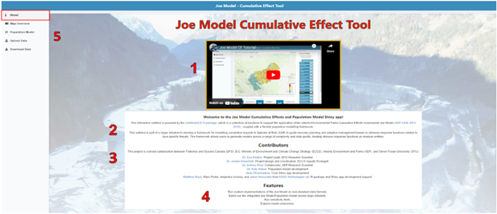
6.2 Upload Data
If you would like to import a custom set of stressor-response functions, spatial polygons, or vital rates (for the life cycle model), select the Upload Data page in the menu on the left side of the screen. This page allows you to upload four key input files from your computer: the stressor-response workbook (.xlsx), the stressor-magnitude workbook (.xlsx), a spatial polygons file (.gpkg or .shp), and a life cycle profile (.csv). To upload a file from your computer, click “Browse…” on the toolbar below the associated file heading. Next, select the desired file from the file window and click “Open”. The file will begin to upload. A status bar will appear below the file name, indicating the upload status. Once the file has been successfully uploaded, the status bar will display “Upload complete”.
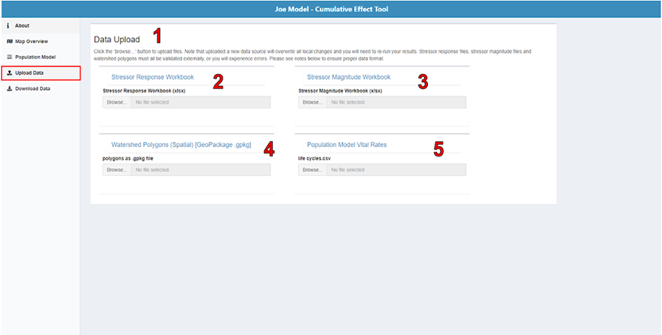
6.3 Map Overview
6.3.1 Map Window
The map window on the Map Overview page allows users to view stressor magnitudes and model results in a choropleth map based on the spatial polygons layer you imported. The map in the centre of the screen is interactive and allows users to scroll, zoom, and select individual polygons. When hovering over a polygon, users will see the name and HUC_ID of that polygon displayed directly above the map window. To select a polygon, click on it once. Selected polygons will appear in blue. Clicking on additional polygons will add to your selection. To deselect a polygon, click it again. The number of selected polygons (HUCs) will appear below the map window on the left-hand side. Click the “deselect all” button beside this text string to deselect all polygons.
6.3.2 Stressors
On the Map Overview page, users can view stressor-response relationships for each of the stressors included in the input stressor-response Excel workbook. A list of these stressors is on the screen’s right side. Clicking on the chart icon next to one of the stressors opens a pop-up window to view the stressor-response curve and raw stressor-response table associated with that specific stressor. You can edit cell values within the stressor-response table by double-clicking on the cell you want to edit. Any edits to the stressor-response table will automatically appear in the stressor-response curve.
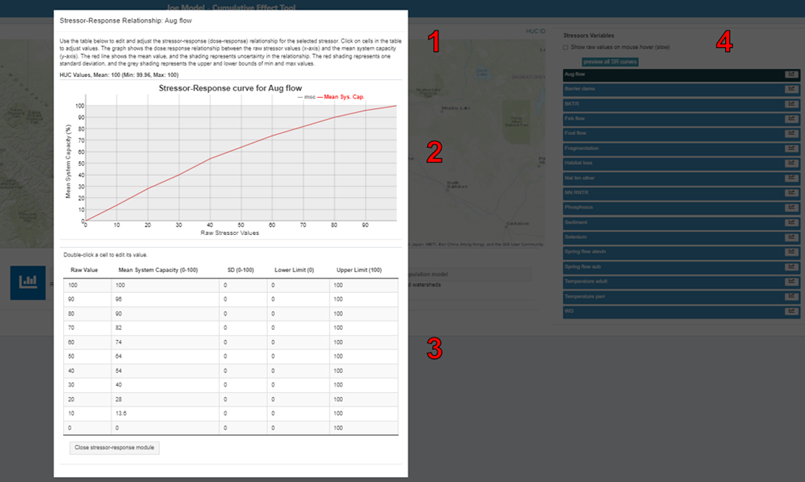
6.3.3 Joe Model
To run the Joe Model, click the “Joe Model” button in the centre of the lower panel. In the pop-up window, you can select/deselect variables that you want to include/exclude in the Joe Model run. In addition, you can specify the number of simulations or batch runs you would like to conduct (in the “Number of Simulations” box), and you can provide a name for the simulation (in the “Name of this Simulation” box). When you are ready to run the Joe Model for all spatial polygons in the study area, click “Run the Joe Model”. Note there is currently no option to run the Joe Model for individual spatial polygons.
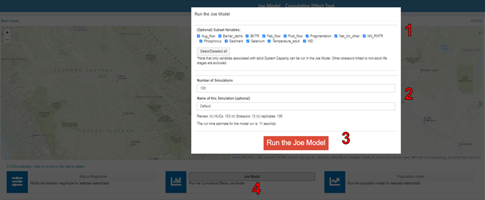
6.3.4 System Capacity Plots
After running the Joe Model, a new section labelled “System Capacity Plots” will appear at the bottom of the map page. You can view tables and plots of the cumulative system capacity for selected watersheds (click “Selected watersheds”) or for all watersheds (click “All watersheds”) compared to the global mean system capacity across all simulations.
System capacity plots show the scaled probability output from the Joe Model from stochastic simulations.
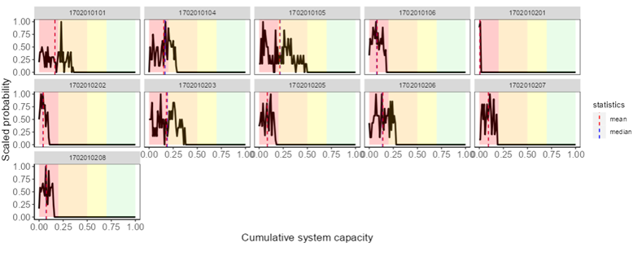
6.3.5 Adjust Magnitude
Users may wish to modify stressor values to represent recovery action or habitat loss. To view and edit stressor magnitudes for an individual spatial polygon, select the spatial polygon of interest and click “Adjust Magnitude” on the right-hand side of the lower panel. Next, review the mean system capacity in the pop-up window for one or more selected locations. Below this, a table containing all the stressors, their magnitudes and distributions will be displayed. Double-click on the desired cell to edit any of the values in this table. Adjust the mean value for each stressor (Mean), the standard deviation (SD), the distribution type (options are normal or lognormal), and the lower limit and upper limit (for stochastic simulations). Note that stressor names and system capacity values cannot be edited. If only one HUC is selected, values will appear in the table; however, if multiple HUCs are selected, the table will appear blank. When multiple HUCs are selected, all modified values will be shared across the selected HUCs. The mean system capacity is shown for selected HUCs to preview the model output.
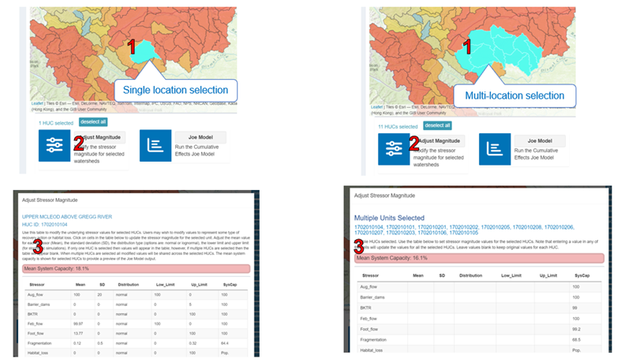
6.3.6 Life Cycle Model
To run the life cycle model associated with the CEMPRA, first select (click) the desired spatial polygons for the run. Once the desired spatial polygons are selected, click the “Life cycle model” button on the left side of the lower panel. In the pop-up window that appears, enter the number of years (in the “N-years” box) and the number of replicates or batch runs (in the “N-replicates” box). When ready to run the life cycle model for the selected spatial polygons, click “Run Life cycle model”.
After the run is complete, three graph panels will appear in the pop-up window. The first panel displays time series projections of the number of individuals by life stage and a time series of lambda values for adults. The second-panel plots abundance at different life stages in the selected spatial polygon(s) compared to a baseline condition. The third-panel plots stressor magnitude against system capacity (0-1) for each of the stressors used in the model. You can view individual data points by hovering over the plot with your cursor. When hovering over the plot, you will also see a menu appear in the top right-hand corner of the plotting window. This menu allows you to pan and zoom around the plot and download a snapshot of the plot onto your computer.
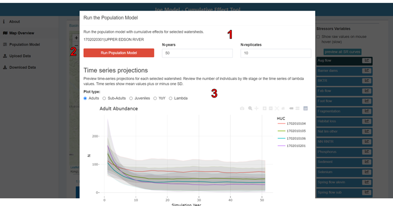 ## Life Cycle Model
The life cycle model is included as an extension to the original CEMPRA. It leverages a flexible stage-structured life cycle modeling framework that can be modified for different target systems. The underlying life cycle model code was originally developed by van der Lee and Koops (2020) and then further modified by Dr. Kyle Wilson to incorporate environmental stressors that are linked to survivorship, capacity, and growth.
If you intend to use the coupled life cycle model along with the Joe Model, click on the Life cycle model page in the menu on the left-hand side of the screen. This page will display all of the parameters and vital rates being used as inputs for the life cycle model. To edit any of these parameters, click anywhere inside the box for a given parameter and either manually enter a new number, or use the up and down arrows that appear on the right side of the box to incrementally adjust the value. Refer to Section 7 for background and additional details on the life cycle modeling component of the CEMPRA tool.
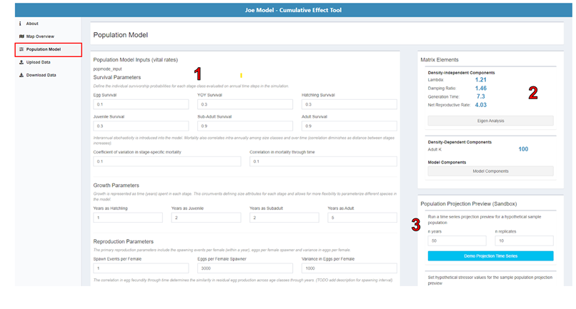
Matrix elements and derived parameters from the life cycle model are shown in the upper right corner of the page. These values will update in real-time as users change the inputs. Lambda values are useful because they show if population parameters will cause the population to grow (lambda greater than 1) or shrink over time (lambda less than 1). Generation time can also be useful to reference against the target population of interest.
Clicking on the “Eigen Analysis” button will bring up a full modal display showing the derived transition matrix, elasticities, sensitivities, net reproductive rates, and stable stage distributions.
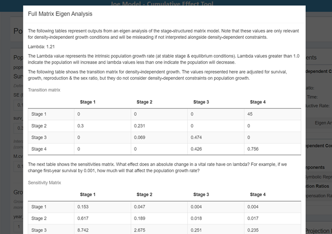
The symbolic representation of the transition matrix can also be reviewed by clicking on the “Symbolic Representations” button. Additional explainer popups are also available throughout the page.
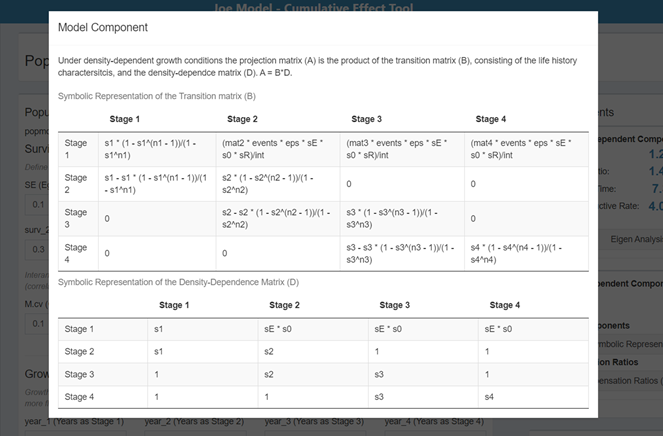
In the bottom left-hand corner of the page is a population projection “sandbox” module. This section allows the user to run sample projections of the population forward through time over a set number of years and batch replicates. Adjusting any of the life cycle parameters and re-running the sandbox projection will allow the user to see how their changes influence the growth trajectory and variability of the population. Running simulations is valuable since it allows users to capture density-dependent and density-independent components of the life cycle model. Separate time series are drawn for the current (red) and previous (teal) projections. The mean value (across batch replicates) is shown as a line, and the grey shading shows the variability across each batch replicate (Figure 6.10).
The sandbox module can also be used to run sample projections for hypothetical combinations of stressor values. Stressor variables linked to the life cycle model and uploaded by the user will appear below the “Demo Projection Time Series” button. Users can populate these values to demonstrate how an individual stressor (or group of stressors) will influence the population at a set of hypothetical values. Be sure to expand the panel for each stressor and values for the mean, SD, lower limit, and upper limit. Check or uncheck the checkbox to include or exclude the stressor in the sandbox simulations.
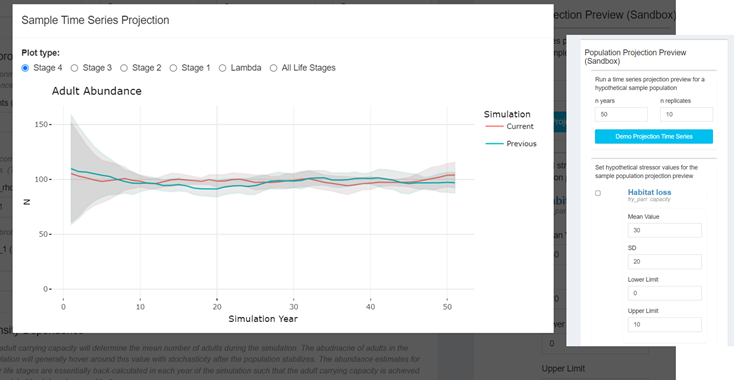
6.4 Download Data
On the Download Data page, you can either download the model input parameter files (i.e., the stressor-response workbook, stressor magnitude workbook, spatial polygons file, and life cycle profile) for offline revisions, or you can directly download the CEMPRA, or Life cycle model outputs for reporting purposes.
Model Parameters: In some circumstances, it may be more convenient to download the stressor magnitude and response Excel workbooks, edit inputs for scenarios offline in Excel or other software and reupload.
Model Exports: The model results can only be exported after the model is run. Export buttons will be disabled until the Joe Model or life cycle model (population model) has been run.
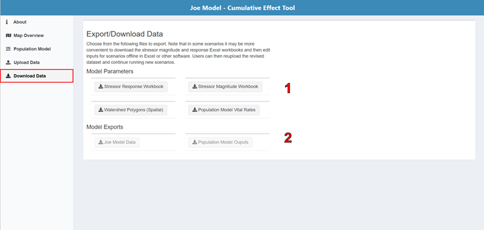
6.5 Interactive Formula Builder
*** (March 22, 2023): This component is still in development and not yet available on the GitHub repository application ***
The interactive formula builder is used to generate custom plots of stressor variables with customized functions and potential interactions between variables. The interactive formula builder provides users with the ability to display outputs from customized regression equations.
A dialogue box is available, allowing users to drag and drop multiple stressors into a formula builder to display relationships and interactions (e.g., 0.45 + stressor_A^0.3 + stressor_B*stressor_C). Various mathematical operators can be included in the formula builder:
- Addition: +; Stressor_A + Stressor_B
- Subtraction: -; Stressor_A - Stressor_B
- Constants: 0.783 + Stressor_A
- Multiplication: ; Stressor_A Stressor_B
- Division: /; Stressor_A / Stressor_B
- Brackets: (); (0.783 + Stressor_A) / Stressor_B
- Exponents: ^; Stressor_A^(0.34 * Stressor_B)
- Logarithms:
- Natural: log(Stressor_A)
- Base-10: log10(Stressor_A)
The interactive formula builder can be useful to display outputs from various habitat suitability models, predictive regression equations, alternative cumulative effects roll-up functions or building novel stressors.
Building Novel Stressors: The interactive formula builder can also be used to build novel stressor variables that consist of combinations of individual stressors. Users enter values into the formula builder to create a synthetic stressor variable. Once satisfied, users can download the novel stressor in the standardized stressor magnitude and stressor-response workbook format. The novel data can then be reimported into the tool to appear on the main map panel for use in the Joe Model and Life Cycle Model.
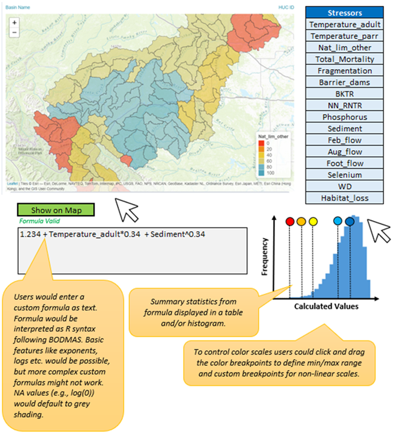